If you want to see tutorial in a separate web browswer window click here.
Positioning on Screen Part I
So why does draw_text(room_width * .5, line_height, "Message"); draw to the screen in the location that it does? What is x and what is y? What does room_width represent?
Lets look at this is some detail. We are positioning objects on the screen using the cartesian coordinate system.
You have most likely seen this in school, it is a two axis representation of an two dimensional area with an x-axis that runs East/West and a y-axis that runs North/South.
The intersection of the two axis is point (0,0). The X axis is positive towards the right and the Y axis is positive upwards.
It looks like:
To position points we move along the X & Y axis. So for position (2, -2) we go two positions to the right on the x axis (away from (0,0)) and two positions down on the y axis. For point (-2, 4) we go two to the left on the x axis and four upwards in y. So they end up here:
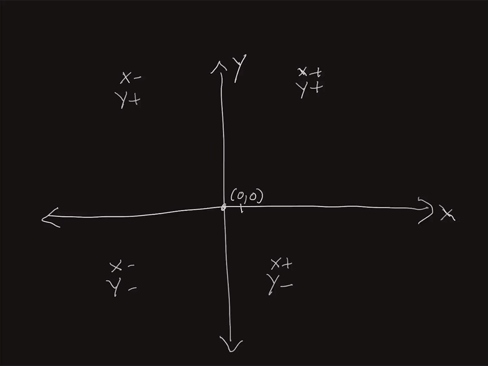
GameMaker is slightly different. First point (0,0) is at the top left corner of the room. Y is positive going down and negative moving upwards. So the quadrant that the room is in is all x-axis positive and y-axis positive. Moving downscreen is also y positive. The top right corner of the room is the (0, room_width). The bottom left corner is (0, room_height) and the bottom right is (room_width, room_height). The top center is (room_width/2, 0). The middle center is (room_width/2, room_height/2).
Open the room rm_data_types. We do not use hard coded numbers for the room height and width. That way we can change the size of the room and our game will still work. If you go to the room you will see the Width and Height and these are the same values stored in room_width and room_height.

Run the game and look at the code that positions the text. The x axis for the text is set to room_width * .5 (same as diving room_width /2). The height is incremented by 22 (the setting of line_height).

So if we want to draw a line underneath, then we can figure out 19 steps of 22 pixels down on the y-axis. This gets us to 418 on the y axis. The x-axis would go from 0 to room_width to draw a line right across the screen.
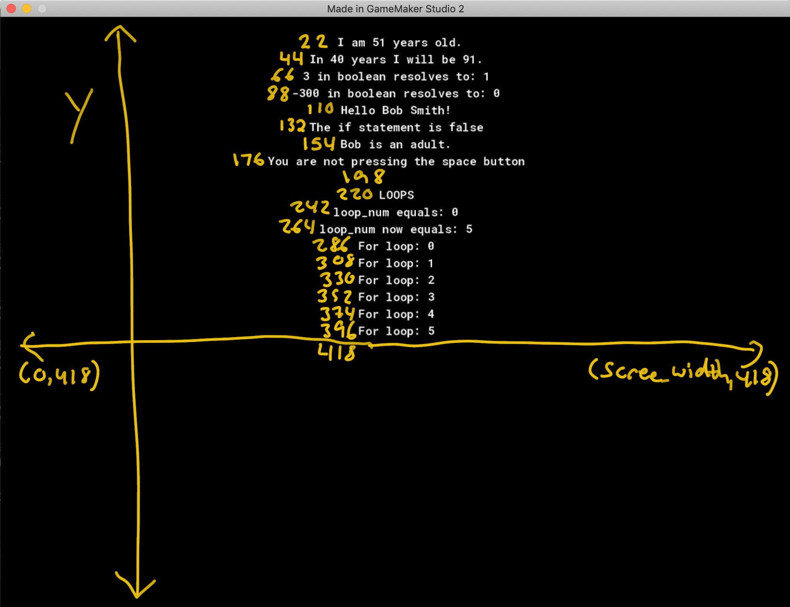
Let's use draw_line(x1, y1, x2, y2). (x1, y1) is the start of the line and (x2, y2) is the end of the line. We are also going to use draw_set_color(color). We will pass as an argument to this function the enumerator c_yellow. We will reset the color back to white after drawing the line. Type the following to the bottom of the obj_data_types_controller Draw Event:
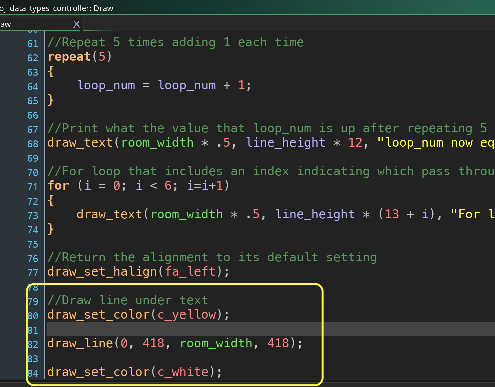
Run the game again by pressing the  Play Button. We should see a yellow line under the text.
Play Button. We should see a yellow line under the text.
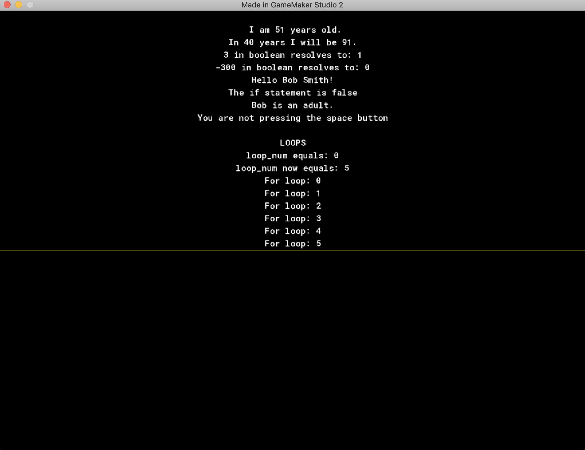
To prove our assumptions correct lets un-hard code the y-axis value to line_height * 19 and run the game. It should look the same as before.

Lets look at placing 2-D sprites, something more game-y, into this 2D room. We will put a red triangle, blue square and green circle on line 25 from the far left, center and right respectively. We want it to look like:
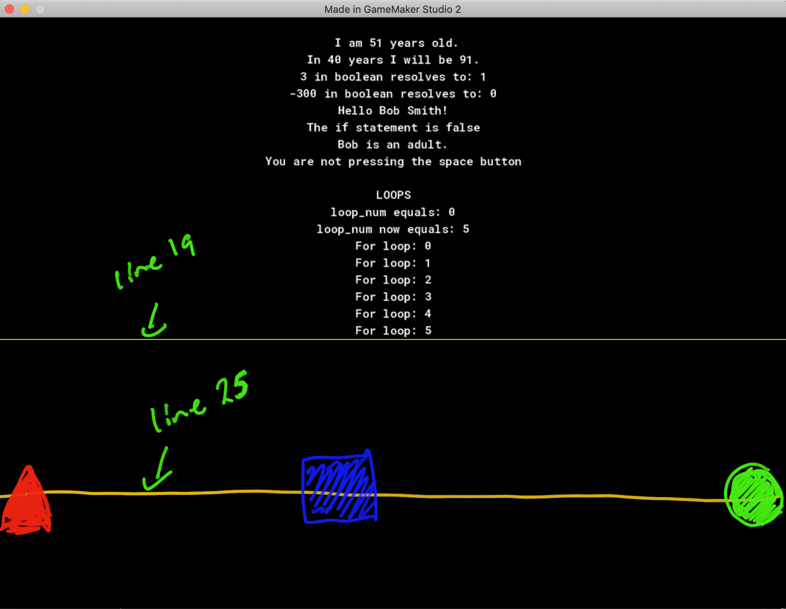
Lets start by drawing another line on line 25. You can just repeat the previous line draw but change it slightly. Type in another line draw like so:
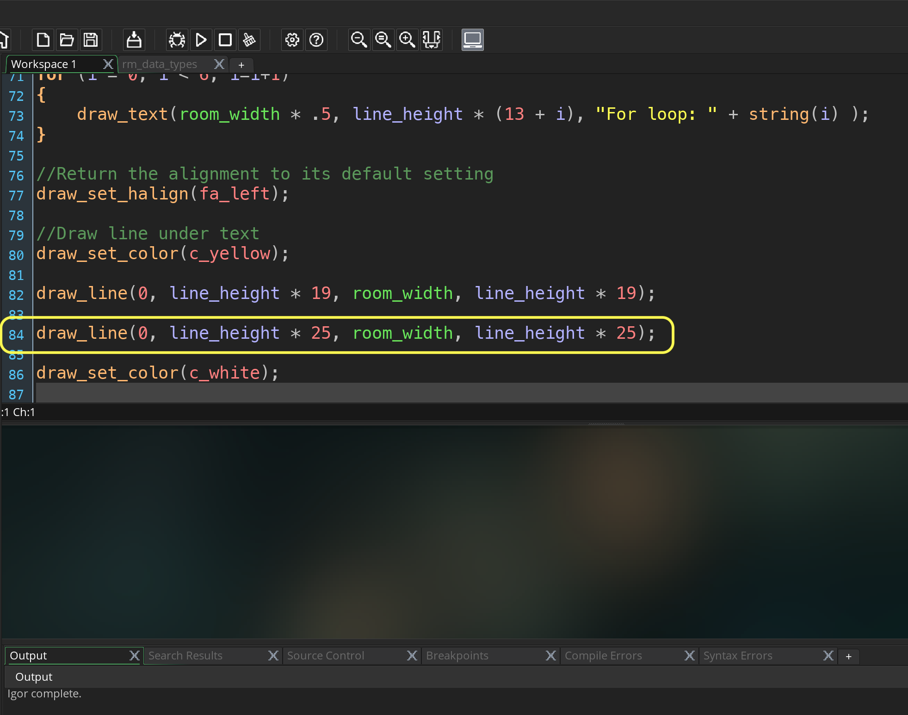
Run the game again by pressing the  Play Button. We should see a second yellow line.
Play Button. We should see a second yellow line.
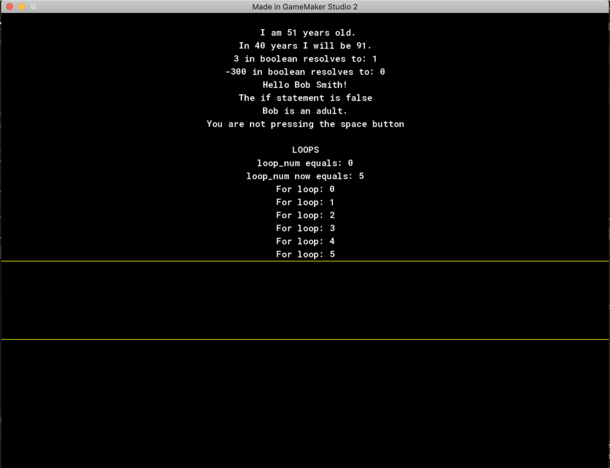
We want to create a new sprite.  Right click the right mouse button on the Sprite title in the Resources tab and select Create Sprite. Change the name to spr_triangle.
Right click the right mouse button on the Sprite title in the Resources tab and select Create Sprite. Change the name to spr_triangle.

Look at the the sprite tab and see the size of the sprite. It defaults to 64 by 64 pixels which we will keep. Please note that this size is a mutliple of 8, something that is very common when selecting sprite sizes. Once you have seen this screen press the Edit Sprite button to create the actual artwork.
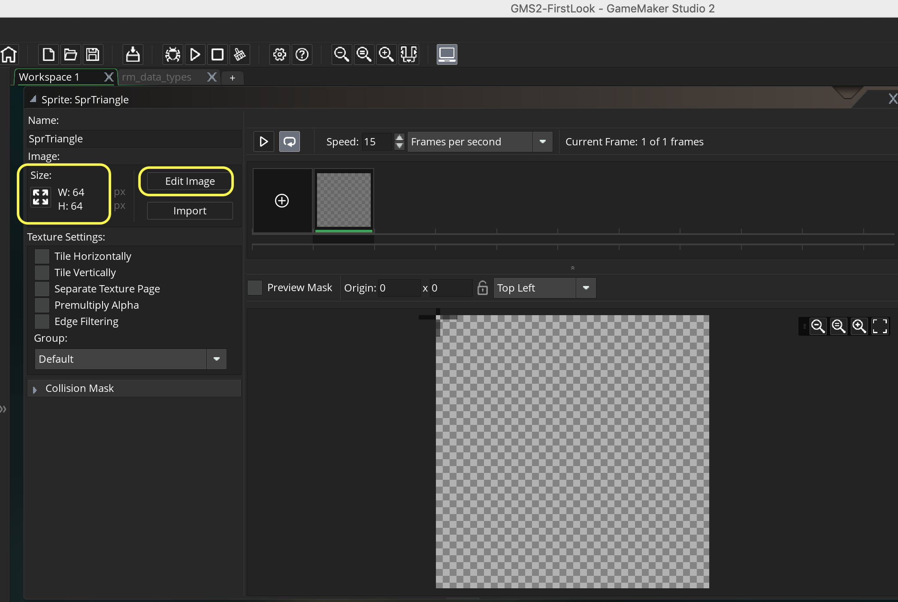
We want the triangle to be red.  Press the left mouse button on the red color in the palette to pick the fill color that we want. Select the lower right half of the Polygon Tool. The top left is the stroke and the bottom right is the fill. We just need to set a fill color for this sprite.
Press the left mouse button on the red color in the palette to pick the fill color that we want. Select the lower right half of the Polygon Tool. The top left is the stroke and the bottom right is the fill. We just need to set a fill color for this sprite.
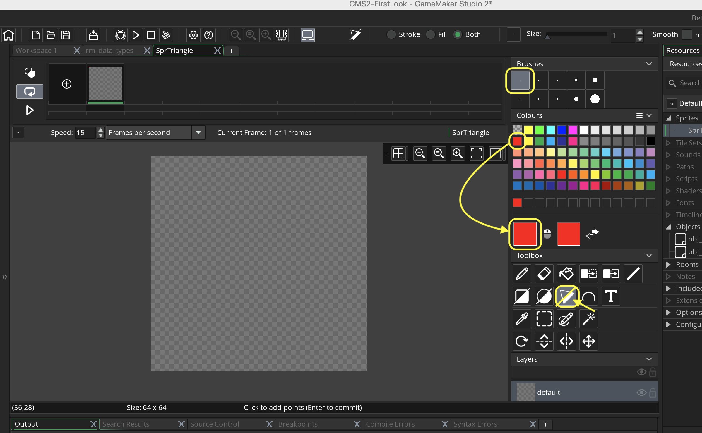
We want to draw all of our sprites to be facing to the right hand side of the screen. The starting rotation for all sprites is right facing (positive along the x-axis). Start to draw it by pressing top left corner, middle right corner, bottom left corner then left center about 20 pixels in to give it a tail.
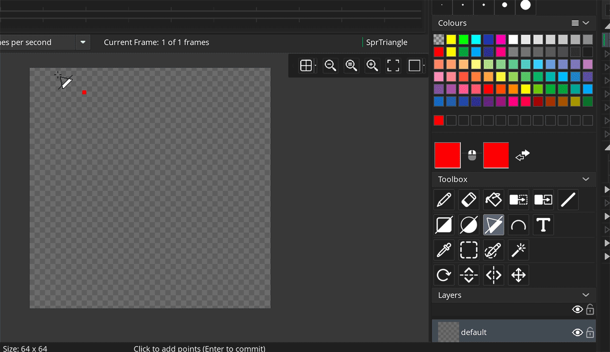
The triangle sprite should look like this:
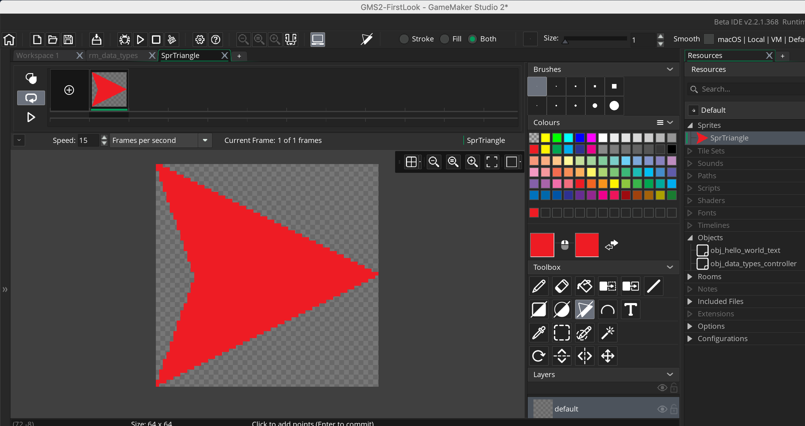
We want to create another sprite, this time a blue square.  Right click the right mouse button on the Sprite title in the Resources tab and select Create Sprite. Select Change the name to spr_square. Once you have seen this screen press the Edit Sprite button to create the actual artwork.
Right click the right mouse button on the Sprite title in the Resources tab and select Create Sprite. Select Change the name to spr_square. Once you have seen this screen press the Edit Sprite button to create the actual artwork.  Press the left mouse button on the blue color in the palette to pick the fill color that we want. Select the the Fill Tool and click within the window.
Press the left mouse button on the blue color in the palette to pick the fill color that we want. Select the the Fill Tool and click within the window.
 Repeat this one last time for a sprite called spr_circle. Press Edit Sprite and select the green color and the bottom right of the Draw Circle tool and draw a nice green circle. Make sure it fills the entire 64 b6 64 frame and is symmetrial in all four corners.
Repeat this one last time for a sprite called spr_circle. Press Edit Sprite and select the green color and the bottom right of the Draw Circle tool and draw a nice green circle. Make sure it fills the entire 64 b6 64 frame and is symmetrial in all four corners.
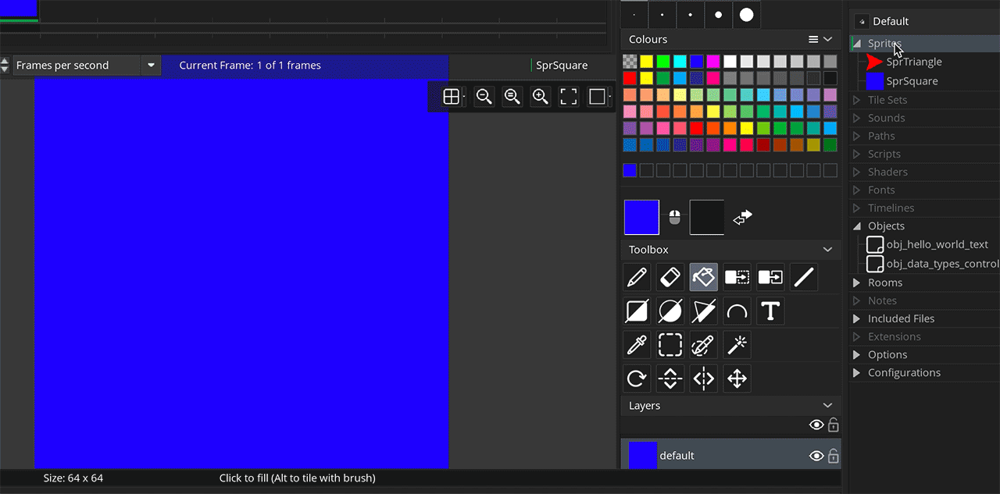
The circle sprite should look like the below picture. Now you should have three completed sprites that we need. On the next page we will move to the next step and draw them on screen.
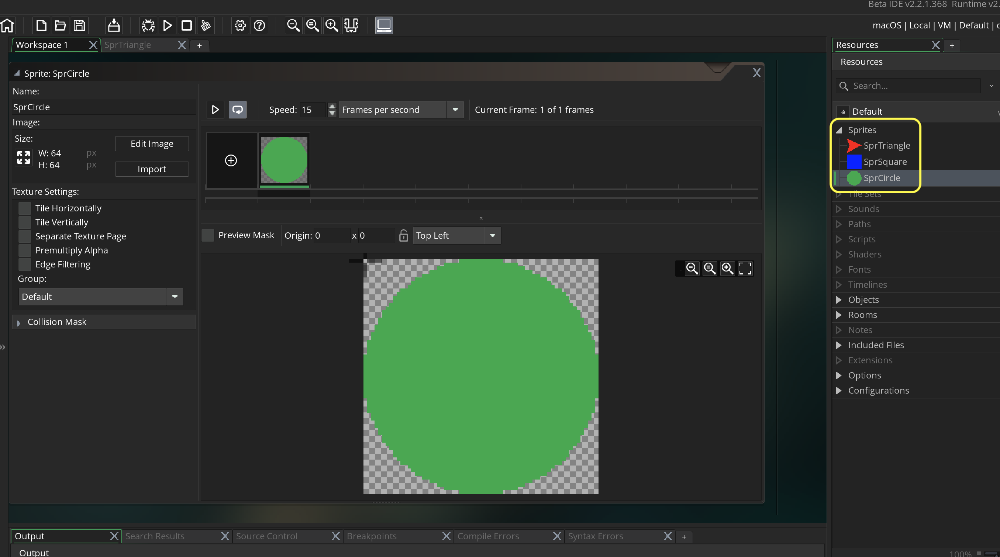